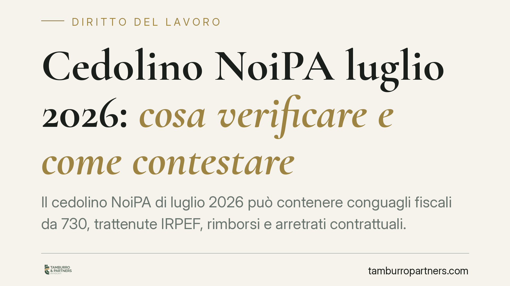

Cedolino NoiPA luglio 2026: cosa verificare e come contestare
Il cedolino NoiPA di luglio 2026 può contenere conguagli fiscali da 730, trattenute IRPEF, rimborsi e arretrati contrattuali. Per il dipendente pubblico non tutte le variazioni sono anomalie: alcune sono legittime, altre vanno contestate entro termini precisi. Distinguere i due casi è essenziale per non perdere il diritto al recupero.

Il contesto
A luglio molti dipendenti pubblici gestiti da NoiPA trovano un cedolino diverso dal solito. È il mese in cui, di norma, confluiscono gli esiti della dichiarazione dei redditi (modello 730), i conguagli fiscali, eventuali rimborsi IRPEF e, quando previsti dai rinnovi, gli arretrati contrattuali.
La somma di queste voci può gonfiare o ridurre l'importo netto in modo sensibile. Il problema pratico è che una variazione può essere del tutto legittima oppure nascondere un errore di calcolo. Saperle distinguere evita sia allarmismi inutili sia la perdita di somme dovute.
Inquadramento normativo
L'amministrazione che eroga lo stipendio agisce come sostituto d'imposta. Significa che trattiene alla fonte le imposte dovute dal lavoratore e le versa all'Erario, secondo l'art. 23 del d.P.R. 600/1973 e il Testo Unico delle Imposte sui Redditi (d.P.R. 917/1986, TUIR).
Sullo stesso soggetto grava anche la gestione degli esiti del 730: il sostituto opera il rimborso o applica la trattenuta risultante dalla dichiarazione, sulla retribuzione dei mesi successivi. Quando la trattenuta a debito è capiente rispetto allo stipendio, viene applicata in unica soluzione; se non è capiente, può essere ripartita sui mesi seguenti. La scansione delle rate non è fissa e uguale per tutti: dipende dall'importo e dalla capienza del cedolino. È quindi opportuno leggere le indicazioni della specifica busta paga, senza dare per scontata una finestra temporale standard.
Gli arretrati contrattuali derivano invece dal rinnovo del contratto collettivo. Per il comparto scuola e ricerca il riferimento è il CCNL Istruzione e Ricerca: gli importi degli arretrati dipendono dal triennio contrattuale effettivamente rinnovato e vigente al momento dell'erogazione. Occorre quindi verificare a quale periodo contrattuale si riferiscono le somme accreditate.
Implicazioni pratiche
La distinzione decisiva è tra variazione legittima e anomalia da contestare. Un conguaglio da 730 o una trattenuta IRPEF coerente con la dichiarazione presentata sono normali. Diverso è il caso di trattenute non giustificate, arretrati calcolati su un periodo errato, o recuperi di somme che l'amministrazione afferma di aver pagato in eccesso.
Quando la PA recupera un presunto indebito (una somma erogata e ritenuta non dovuta), il dipendente non è privo di tutele: può contestare l'esistenza e l'entità del credito vantato dall'amministrazione. Sul fronte opposto, se è il lavoratore a vantare somme non corrisposte, deve muoversi entro i termini di prescrizione.
Qui la regola generale va calibrata. I crediti retributivi che maturano periodicamente — stipendio, arretrati, voci accessorie — si prescrivono in cinque anni ai sensi dell'art. 2948 n. 4 c.c. Non trova quindi applicazione la prescrizione ordinaria decennale dell'art. 2946 c.c., che opera solo in via residuale per pretese di natura diversa. In pratica: chi lamenta arretrati non pagati ha cinque anni per agire, e ogni mensilità matura il proprio termine autonomamente.
Altro piano è quello degli eventuali termini amministrativi per presentare istanze o segnalazioni all'amministrazione: sono adempimenti procedurali che non coincidono con la prescrizione del diritto sostanziale e vanno valutati caso per caso.
Cosa fare in concreto
- Confronta il cedolino di luglio con quelli dei mesi precedenti, isolando le singole voci variate (imponibile, IRPEF, conguaglio 730, arretrati).
- Verifica la coerenza del conguaglio 730 con la dichiarazione presentata: rimborso o debito devono corrispondere all'esito comunicato.
- Controlla il periodo di riferimento degli arretrati contrattuali e confrontalo con il triennio del CCNL effettivamente rinnovato.
- Conserva cedolini, CU e comunicazioni dell'amministrazione: sono la prova documentale in caso di contestazione.
- Attivati per tempo se rilevi somme non versate: il credito retributivo si prescrive in cinque anni, quindi l'inerzia prolungata può far perdere il diritto.
Di fronte a un recupero di indebito o a un calcolo che non torna, è opportuno inquadrare la questione con un professionista prima di far decorrere i termini utili.
Disclaimer
Contributo informativo a cura di Tamburro & Partners Avvocati - Avv. Giuseppe Tamburro. Non costituisce parere legale.
Ogni storia di lavoro ha i suoi tempi.
Se gestisci HR e vuoi un confronto su contenzioso, ispezioni o licenziamenti, scrivi allo studio. Ti rispondiamo entro un giorno lavorativo.